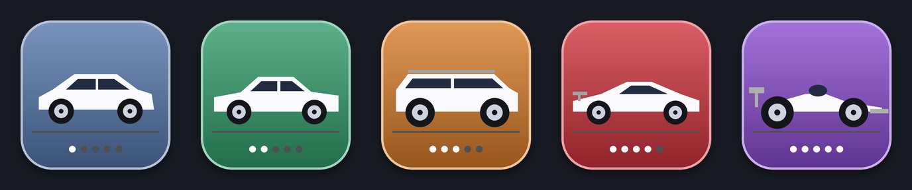
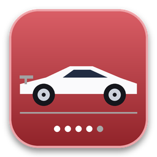
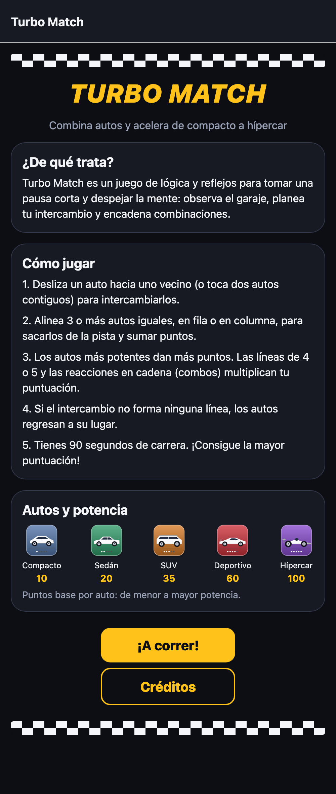
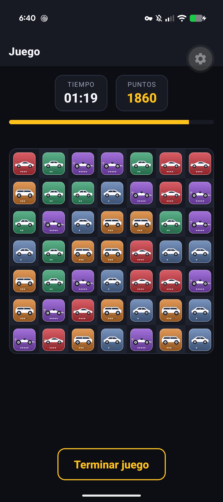
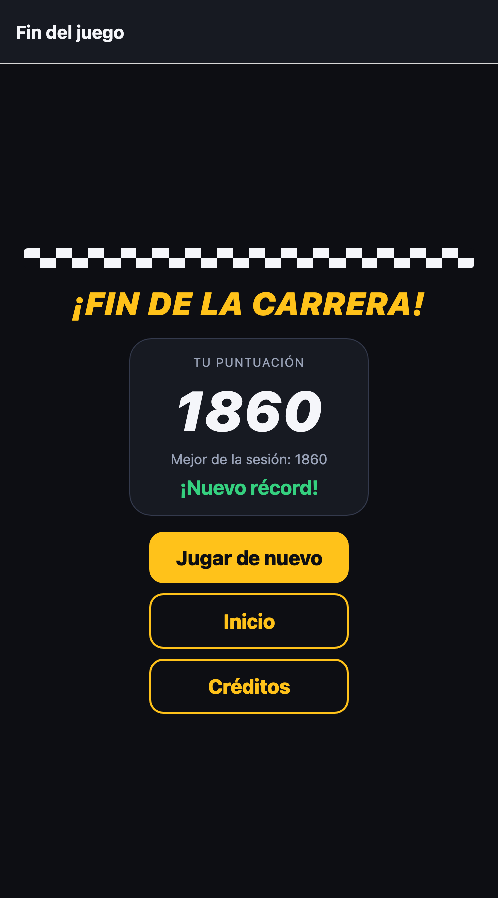
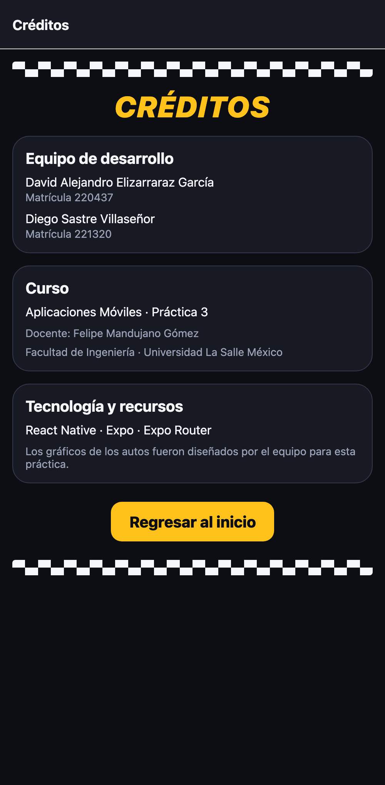

Aplicar los conceptos de programación avanzada con React Native y Expo para desarrollar una aplicación móvil interactiva de entretenimiento. De manera específica, a partir de la aplicación de las lecciones 15 y 16 y del repositorio base del docente, se desarrolla Turbo Match, un juego de tipo Match-3 con cuatro pantallas (presentación, juego, juego terminado y créditos) que usa Expo Router para la navegación, estados con hooks, gestos táctiles, animaciones y una identidad visual consistente, y que se demuestra en un dispositivo físico mediante Expo Go.
React Native y Expo. React Native permite construir interfaces móviles nativas con JavaScript/TypeScript y React: los componentes (View, Text, Image, Pressable) se traducen a vistas nativas de Android o iOS, no a una página web embebida. Expo es el conjunto de herramientas sobre React Native que simplifica el desarrollo: su CLI levanta el servidor de desarrollo (Metro), empaqueta el código y lo entrega a Expo Go, una aplicación contenedora que permite probar el proyecto en un dispositivo real sin compilar código nativo, con recarga rápida (Fast Refresh) al guardar los cambios.
Navegación con Expo Router. Expo Router define las rutas a partir de la estructura de archivos: cada archivo de src/app/ es una pantalla y _layout.tsx declara el navegador (aquí un Stack). La navegación imperativa se hace con router.push, que apila una pantalla, y router.replace, que sustituye la actual y evita que el botón «Atrás» regrese a una pantalla que ya no corresponde; los parámetros viajan en la ruta y se leen con useLocalSearchParams.
Estado y ciclo de vida. El modelo de React es declarativo: la interfaz es una función del estado. useState conserva valores que al cambiar deben redibujar la pantalla (tiempo, puntos), useEffect ejecuta efectos secundarios al montar o al cambiar una dependencia y los limpia al desmontar (el temporizador), y useRef guarda valores mutables que no provocan redibujado (el tablero, banderas de «ocupado»). Cuando se requiere controlar un componente de forma imperativa se usan referencias, como en la lección del tablero con celdas.
Gestos y animación. PanResponder agrupa los toques en un gesto con tres momentos: concesión (onPanResponderGrant), movimiento (onPanResponderMove, con el desplazamiento acumulado dx, dy) y liberación (onPanResponderRelease). La API Animated interpola valores (Animated.Value) con timing o spring; con useNativeDriver: true las transformaciones (translateX, scale) y la opacidad se ejecutan en el hilo nativo, lo que mantiene la fluidez aunque el hilo de JavaScript esté ocupado.
Mecánica Match-3 y 2048. En los videojuegos de combinación de fichas (tile-matching) el jugador manipula piezas sobre una cuadrícula para formar alineaciones de piezas iguales, que desaparecen y otorgan puntos; las piezas superiores caen (gravedad), entran piezas nuevas y pueden generarse reacciones en cadena (combos). En Match-3 se intercambian dos piezas adyacentes y el intercambio solo es válido si forma una línea de tres o más; en 2048 se funden fichas iguales para obtener una de mayor valor. Ambos comparten la idea de «igualdad contigua» y de valor creciente de las piezas.
Modelo de objetos de juego y Entity Component System (ECS). Los motores de videojuegos suelen organizar el mundo en objetos de juego (game objects) a los que se agregan componentes (posición, imagen, física, comportamiento) y ejecutan un ciclo de juego que actualiza todo en cada cuadro. El patrón Entity Component System separa aún más: las entidades son solo identificadores, los componentes son datos puros y los sistemas son funciones que procesan todas las entidades que poseen ciertos componentes, lo que favorece el rendimiento y la reutilización (Nystrom, 2014).
Usabilidad. Se aplicaron heurísticas de Nielsen: visibilidad del estado del sistema (H1: tiempo, puntos y avisos de «+puntos» o «combo»), control y libertad del usuario (H3: confirmación antes de terminar la partida), prevención de errores (H5: el intercambio inválido no se ejecuta, regresa a su lugar) y ayudar a reconocer y recuperarse de errores (H9: mensaje en lenguaje claro). La semiótica orienta el diseño de los gráficos: un signo funciona si su forma evoca el concepto, por ejemplo una silueta cada vez más deportiva para indicar mayor potencia.
| CANTIDAD | MATERIAL Y EQUIPO |
|---|---|
| 1 | Computadora personal con macOS y Node.js 22.18 / npm 10.9 |
| 1 | Expo SDK 57 (expo 57.0.26), React Native 0.86.3, React 19.2.3, Expo Router 57.0.24 y TypeScript 6.0 |
| 1 | Dispositivo físico Google Pixel 10 (Android) con Expo Go para SDK 57, conectado por USB con depuración habilitada |
| 1 | Android SDK Platform-Tools (adb 37.0.1) para autorizar el dispositivo, instalar Expo Go y capturar la pantalla |
| 1 | Python 3 con la biblioteca Pillow para dibujar los gráficos de los autos y los íconos |
| 1 | Google Chrome (modo sin interfaz) para generar las capturas de la vista web y este reporte en PDF |
| 1 | Asistente de programación con IA (Claude Code) como apoyo para escribir código, gráficos y documentación |
1. Base del proyecto. Se partió del repositorio proporcionado (test-2026-2), una plantilla de Expo SDK 57 con Expo Router y un tablero de 4×4 con arrastre mediante PanResponder, cuya detección de coincidencias estaba pendiente (checkCell). Se conservaron las versiones del repositorio, se instalaron las 607 dependencias con npm install y se desactivó el compilador de React (reactCompiler en app.json) porque el juego muta referencias durante el renderizado, patrón que ese compilador no optimiza.
2. Organización por capas. En lugar de concentrar todo en pantallas, el código se separó así: src/app (rutas: index, game, gameover, credits y el _layout con el Stack), src/game (engine.ts con la lógica pura, cars.ts con los gráficos y scoreStore.ts con el mejor puntaje), src/components (AppButton, CheckeredStrip) y los archivos theme.ts y styles.ts con la paleta y los estilos reutilizables.
3. Identidad visual. Para entretener de forma sana, divertida y corporativa se eligió una temática de autos y carreras con una paleta sobria: asfalto oscuro (#0D0E13, #171A22, #1F2330) como fondo y superficies, ámbar de faros (#FFC21A) como único color de acción, verde (#35D07F) para aciertos y naranja (#FF5A36) para avisos. Esos valores viven en un solo archivo (theme.ts) y los estilos de títulos, tarjetas, botones e indicadores (styles.ts) y el componente AppButton se reutilizan en las cuatro pantallas; la franja de bandera a cuadros (CheckeredStrip) es el motivo decorativo común. Se dibujó además el ícono de la aplicación y de la pantalla de bienvenida con el auto de mayor potencia.
4. Recursos gráficos de las celdas. Cada celda muestra un auto; el tipo de auto indica la característica común que debe coincidir y la potencia indica su «poder». Los cinco gráficos (PNG de 256 px) se dibujaron por programa con Pillow para no depender de material de terceros. La figura 1 muestra los recursos y la tabla 1 resume su justificación.

| AUTO | GRÁFICO | PUNTOS | JUSTIFICACIÓN |
|---|---|---|---|
| Compacto | 10 | Silueta de hatchback redondeada y azul pizarra; es el vehículo más común y de menor valor. Un punto de potencia. | |
| Sedán | 20 | Silueta de tres volúmenes, más larga; verde. Dos puntos de potencia. | |
| SUV | 35 | Carrocería alta y rectangular con barras de techo y ruedas grandes; naranja. Tres puntos de potencia. | |
| Deportivo |  | 60 | Perfil bajo en cuña con alerón; rojo, color asociado a velocidad. Cuatro puntos de potencia. |
| Hípercar | 100 | Monoplaza con alerones y llantas expuestas; morado, el color más «raro». Cinco puntos de potencia. |
La elección sigue tres criterios. Semiótico: la silueta se vuelve más baja y aerodinámica al subir de nivel, de modo que el orden compacto < sedán < SUV < deportivo < hípercar se entiende sin leer texto. Accesibilidad: cada auto se distingue por tres señales redundantes (silueta, color de fondo y número de puntos de potencia), así que un jugador con daltonismo no depende solo del color. Legibilidad: las siluetas blancas sobre fondo de color saturado conservan contraste en celdas de aproximadamente 52 px.
5. Motor del juego. La lógica se escribió como funciones puras en engine.ts, sin depender de React, sobre un tablero de 7×7 con 5 tipos. createBoard llena la cuadrícula evitando líneas ya formadas y verifica que exista al menos un movimiento; findRuns busca líneas de 3 o más en filas y columnas; collapse aplica la gravedad y genera las piezas nuevas desde fuera del tablero; hasMoves comprueba que aún haya jugadas y shuffleBoard mezcla el tablero cuando no quedan. La puntuación de una línea es puntos × longitud × (longitud − 2) (3 piezas ×1, 4 piezas ×2, 5 piezas ×3) y se multiplica por el número de cascada (combo); así la puntuación aumenta con cada acción correcta y premia tanto las líneas largas como los autos de mayor potencia.
6. Pantalla de juego. Cada auto es un Animated.View con valores animados de posición, escala y opacidad, que se crean una vez y se manipulan de forma imperativa. El tablero recibe los toques con un PanResponder: al iniciar el gesto se calcula la celda con locationX/Y (por eso las vistas internas usan pointerEvents: "none"), y si el desplazamiento supera el 30 % del tamaño de la celda se toma la dirección dominante y se intercambia con la vecina; también se admite tocar dos autos contiguos. El flujo de un intercambio se escribió con async/await sobre las animaciones: intercambiar (150 ms), buscar líneas, desvanecer, aplicar gravedad (230 ms) y repetir mientras haya cascadas. Una bandera busy ignora los toques durante la secuencia. Si el intercambio no forma línea, los autos regresan y aparece el aviso «Ese intercambio no forma una línea» (H5, H9). El temporizador de 90 s con barra de progreso y los avisos «+puntos» y «¡Combo x2!» dan visibilidad del estado (H1), y «Terminar juego» pide confirmación (H3).
7. Pantallas restantes. La pantalla de presentación (figura 2) muestra el nombre, una descripción breve del propósito, las instrucciones, la tabla de autos y potencia y los botones «¡A correr!» y «Créditos». Al terminar el tiempo o confirmar la salida se navega con router.replace a la pantalla de juego terminado (figura 4), que recibe la puntuación y el mejor puntaje por parámetros y ofrece «Jugar de nuevo», «Inicio» y «Créditos». La pantalla de créditos (figura 5) presenta al equipo, el curso y la tecnología usada.




8. Pruebas del motor. Se escribieron 7 pruebas automatizadas con node:test (npm test) que verifican: 200 tableros generados sin líneas y con movimientos disponibles, detección de líneas horizontales de 3 y verticales de 4, que dos piezas iguales no cuentan, el cálculo de puntos, que la gravedad no deja huecos y que la mezcla conserva las piezas y deja un tablero jugable. Las 7 pruebas pasan y tsc --noEmit no reporta errores de tipos.
9. Ejecución en el dispositivo físico. Con el Pixel 10 conectado por USB se confirmó con adb devices que apareciera como device (tras aceptar en el teléfono el aviso de depuración USB), y se ejecutó npx expo start --android. La herramienta de Expo descargó e instaló Expo Go en el teléfono, configuró el reenvío del puerto 8081 (adb reverse) y abrió la aplicación, que compiló el paquete JavaScript (1,416 módulos) en pocos segundos. Para que la pantalla no se apague durante la demostración se usó adb shell svc power stayon usb.
adb devices -l npx expo start --android --port 8081 adb shell svc power stayon usb
La aplicación cumple los requisitos de la asignación: está hecha con React Native, Expo y Expo Router; tiene pantallas de presentación (nombre, descripción e instrucciones), juego, juego terminado y créditos; el juego es de tipo Match-3 con eliminación de celdas iguales contiguas, caída y combos; cada celda usa un gráfico que indica su tipo y su nivel de poder; los estilos (theme.ts, styles.ts, componentes) son reutilizables y dan una identidad uniforme; la puntuación sube con cada línea formada; y funciona en un dispositivo físico mediante Expo Go. En las pruebas con el dispositivo se jugaron partidas completas y se observaron los avisos de puntos y de combo (por ejemplo «+210 ¡Combo x2!») y la devolución del intercambio inválido.
El factor que más contribuyó fue separar la lógica del juego de la interfaz: al estar el motor en funciones puras fue posible probarlo sin dispositivo y, cuando el equipo decidió cambiar la temática de minerales a autos para dar originalidad, solo se modificaron los gráficos, la paleta y los textos; el motor no cambió y las 7 pruebas siguieron pasando. La contrapartida es que React es declarativo y un juego necesita sincronizar animaciones asíncronas con un estado lógico que cambia rápido, por lo que se recurrió a referencias, valores animados mutables y una bandera de «ocupado».
Problemas encontrados y soluciones:
adb devices mostraba el Pixel 10 como no autorizado y Expo respondía que el equipo no estaba autorizado. Se resolvió aceptando en el teléfono el aviso «¿Permitir depuración USB?»; como la autorización se pidió de nuevo al reiniciar el servidor de adb, se reinició un solo servidor y se esperó a que el estado cambiara a device antes de lanzar Expo.expo start --android lo descargó e instaló automáticamente en la versión que corresponde al SDK 57.adb screencap la imagen salió completamente negra porque el teléfono tenía abiertas las Opciones de desarrollador y la pantalla se apaga por inactividad. Se mantuvo la pantalla encendida con svc power stayon usb y se volvió a abrir la aplicación.type y usar la extensión .ts, y tsc se configuró para excluir la carpeta de pruebas.locationX/Y es relativo a la vista que recibe el toque; si una celda lo recibiera, la posición sería local a ella. Se resolvió como en la lección: las vistas internas del tablero ignoran los toques (pointerEvents: "none") y el tablero calcula la celda.Limitaciones y mejoras a futuro. El mejor puntaje solo vive en memoria; podría persistirse con AsyncStorage. Faltan sonido, vibración háptica, dificultad progresiva y un modo de pistas. Como mejora principal se propone un tablero de puntuaciones en línea. La siguiente propuesta es conceptual y busca que sea seguro y razonablemente robusto ante ataques de suplantación (spoofing), tanto de usuario como de cliente:
POST /api/partidas con el token de sesión del usuario (inicio de sesión sobre HTTPS, como en la práctica 2). El servidor responde con un idPartida único, una semilla aleatoria para generar el tablero, la hora de inicio y una firma HMAC-SHA256 de esos datos con una clave que solo conoce el servidor (Krawczyk et al., 1997).POST /api/partidas/{id}/fin con la lista de movimientos (celda origen, destino y marca de tiempo). El servidor no confía en el puntaje enviado: reproduce la partida ejecutando el mismo engine.ts (es lógica pura y corre en Node) y calcula el puntaje real.idPartida ya se usó (anti-reproducción o replay), si excede los 90 s más una tolerancia, si hay movimientos físicamente imposibles (por ejemplo menos de 150 ms entre intercambios) o si algún movimiento es inválido.Con este esquema, un atacante que suplante al usuario necesita su token; uno que falsifique el cliente no puede inventar un puntaje porque el servidor lo recalcula; y uno que repita una partida válida es detenido por el identificador de un solo uso.
Conclusión grupal. Esta práctica integró en una sola aplicación lo visto en las lecciones 15 y 16: navegación con Expo Router, estados y ciclo de vida con hooks, gestos con PanResponder y animaciones con Animated. Ventajas de React Native y Expo: un solo código en TypeScript, rutas por archivos que dejan la navegación casi declarativa, recarga rápida y Expo Go para probar en un teléfono real en minutos, y animaciones fluidas gracias al native driver. Dificultades: el modelo declarativo no encaja de forma natural con un juego, donde muchas piezas cambian de estado varias veces por segundo; fue necesario usar referencias y valores animados mutables, coordinar promesas con la lógica y manejar a bajo nivel los gestos y las coordenadas del toque. Tampoco existe un ciclo de juego propio (update por cuadro): todo avanza por eventos y animaciones.
En contraste, un motor de videojuegos con modelo de objetos de juego o ECS ofrece un ciclo de actualización por cuadro, escenas, colisiones, física y animadores integrados, y organiza el mundo en entidades, componentes y sistemas. Nuestro engine.ts se parece a esa separación: los datos (Grid, Tile) están aparte de funciones puras que actúan como «sistemas» (findRuns, collapse, runScore), y React hace de capa de presentación. Para un juego de tablero con pocas piezas esto funciona bien y se beneficia de la navegación, los formularios y la distribución móvil de React Native; para juegos con cientos de objetos, física o efectos continuos, un motor basado en objetos de juego o ECS escala mejor.
Conclusión individual de David Alejandro Elizarraraz García. Esta práctica me mostró que en un juego la parte difícil no es dibujar las piezas sino coordinar el tiempo: cada intercambio es una cadena de animaciones y cálculos que debe terminar antes de aceptar otro toque, y resolverlo con async/await y una bandera de «ocupado» me ayudó a entender el ciclo de eventos. Separar el motor en funciones puras permitió probarlo sin dispositivo y cambiar la temática sin tocar la lógica. También aprendí que la fase de pruebas en un dispositivo real incluye problemas ajenos al código, como la autorización de adb. Para mi formación como ingeniero en cibernética, la propuesta de validar la partida en el servidor refuerza una idea que sirve en sistemas de control: no confiar en el dato que reporta un cliente, sino verificarlo.
Conclusión individual de Diego Sastre Villaseñor. Lo que más me dejó fue ver que el diseño visual se puede justificar: definir la paleta y los estilos en un solo archivo hizo que las cuatro pantallas se vieran como una sola aplicación, y elegir los autos por su silueta, color y puntos de potencia permitió que el nivel de poder se entienda sin leer texto y sin depender solo del color. En la navegación entendí la diferencia entre apilar y reemplazar pantallas con push y replace. Las pruebas me enseñaron que avisar al jugador cuando un movimiento no es válido evita que la aplicación parezca descompuesta. Comparar este desarrollo con un motor de videojuegos me dejó claro cuándo conviene cada herramienta.
Expo. (s.f.). Introduction to Expo Router. Expo Documentation. Recuperado el 12 de octubre de 2026, de https://docs.expo.dev/router/introduction/
Expo. (s.f.). Expo Go. Recuperado el 12 de octubre de 2026, de https://expo.dev/go
Google. (s.f.). Android Debug Bridge (adb). Android Developers. Recuperado el 12 de octubre de 2026, de https://developer.android.com/tools/adb
Google. (s.f.). Play Integrity API. Android Developers. Recuperado el 12 de octubre de 2026, de https://developer.android.com/google/play/integrity
Krawczyk, H., Bellare, M. y Canetti, R. (1997). HMAC: Keyed-hashing for message authentication (RFC 2104). Internet Engineering Task Force. https://www.rfc-editor.org/rfc/rfc2104
Meta Platforms, Inc. (s.f.). Animated. React Native Documentation. Recuperado el 12 de octubre de 2026, de https://reactnative.dev/docs/animated
Meta Platforms, Inc. (s.f.). PanResponder. React Native Documentation. Recuperado el 12 de octubre de 2026, de https://reactnative.dev/docs/panresponder
Nielsen, J. (2024). 10 usability heuristics for user interface design. Nielsen Norman Group. Recuperado el 12 de octubre de 2026, de https://www.nngroup.com/articles/ten-usability-heuristics/
Nystrom, R. (2014). Game programming patterns. Genever Benning. https://gameprogrammingpatterns.com/component.html
OWASP Foundation. (2023). OWASP API security top 10 – 2023. Recuperado el 12 de octubre de 2026, de https://owasp.org/API-Security/editions/2023/en/0x00-header/
Wikipedia. (s.f.). 2048 (videojuego). Recuperado el 12 de octubre de 2026, de https://es.wikipedia.org/wiki/2048_(videojuego)
Wikipedia. (s.f.). Motor de videojuego. Recuperado el 12 de octubre de 2026, de https://es.wikipedia.org/wiki/Motor_de_videojuego
Wikipedia. (s.f.). Tile-matching video game. Recuperado el 12 de octubre de 2026, de https://en.wikipedia.org/wiki/Tile-matching_video_game